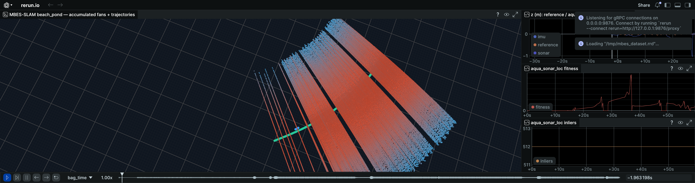
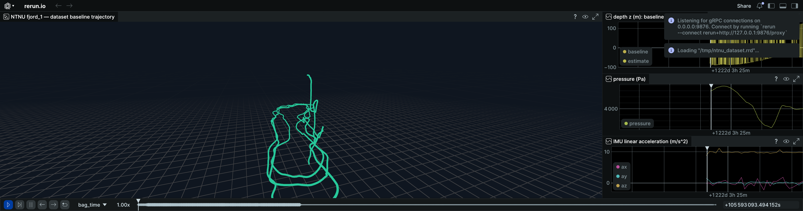

Localization Core
15-state UKF, pressure-depth updates, DVL velocity fusion, sonar odometry, and pose-graph constraints remain the foundation.
aqua_localization fuses IMU, pressure, DVL, sonar registration, and g2o pose-graph constraints on public underwater datasets. The next visual track explores how multibeam bathymetry and camera frames could feed an underwater 3D Gaussian Splatting demo.
The project page keeps the visual story tied to committed demo artifacts: rerun captures, smoke tests, and dataset-specific scripts instead of screenshots that cannot be reproduced.




The current roadmap is practical: keep the estimator reliable, make sonar loop closure measurable, and expose visual reconstruction experiments as demos before claiming benchmark wins.
15-state UKF, pressure-depth updates, DVL velocity fusion, sonar odometry, and pose-graph constraints remain the foundation.
Submap candidates, registration gates, status summaries, and RViz/rerun inspection make false positives visible before they become papers.
A GitHub Pages demo track plus a v0.3 Tank Dataset sample pack with 20 images, matched poses, nerfstudio transforms, and a static inspector.
ros2 run aqua_localization pose_graph_loop_smoke.sh ros2 run aqua_localization rerun_export.py --bag datasets/public/tank_dataset/demo_with_estimate --out /tmp/tank.rrd rerun /tmp/tank.rrd
The post-v0.4 plan is intentionally measurable: train from the published sample pack, quantify MBES loop-closure tuning, and keep external comparisons reproducible.
Run check_3dgs_training_ready.py on the v0.3 Tank sample pack, then push it through a small nerfstudio or gsplat-style training path.
Export loop-closure status summaries from a real bag so accepted, rejected, and suspicious candidates are visible.
Fill comparison tables from reproducible runs instead of narrative claims, starting with Tank and AQUALOC coverage.